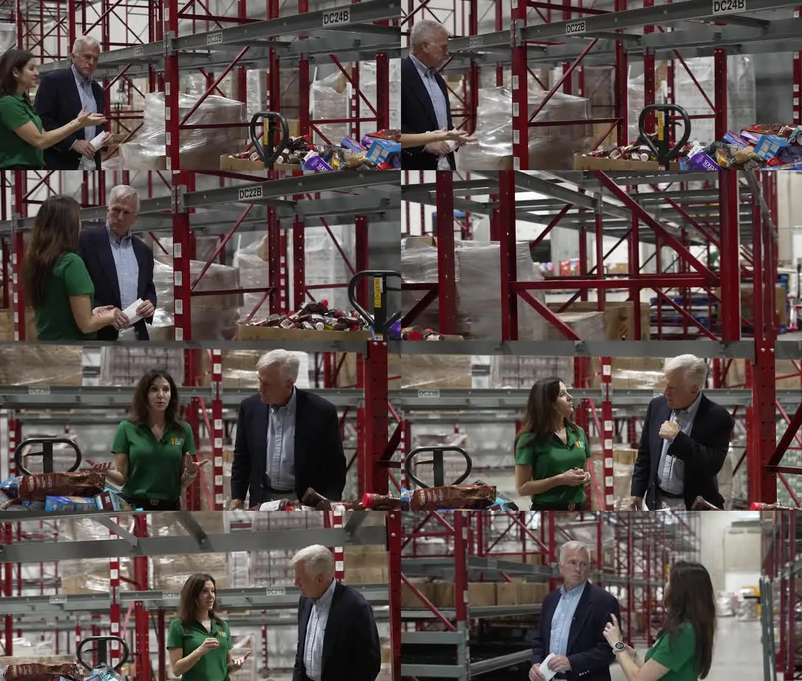
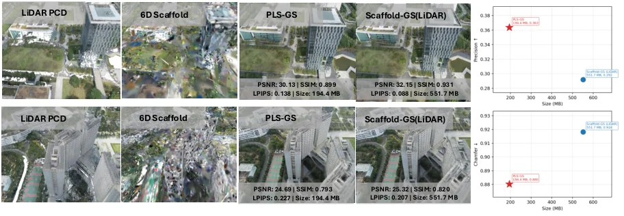
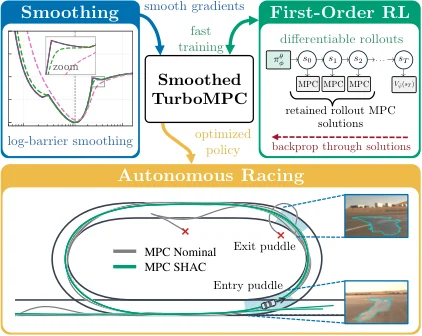

新论文 · 日期 2026-11-10 · score 20 · S层 · Geometry Foundation Models / 3D Foundation Models · cs.CV, cs.GR
内容级别：完整单篇海报
作者：Somesh Mohapatra
评分 8.3/10
世界模型3D 高斯溅射米制深度OpenUSD数字孪生留出帧评测动态行人
一句话工作总结：结论是“看见的部分便宜且可米制化，没看见的部分仍未解决”。20 帧、200 credits 换来 747k splats 与 48.5 MB USDZ；本地 3DGS 在 64/43 帧时 21.16/23.10 dB，8 帧降到 17.34/17.69 dB；去掉背景补全与外壳剔除升到 23.64 dB（两个场景），但被掩码区域没有真值。世界模型生成步骤两次失败，外推未评估。
论文用一段公开的食品银行仓库新闻走访视频作为唯一几何输入，考察商业世界模型与本地 3D 高斯溅射各自能恢复什么。世界模型接收 20 帧后输出相机位姿与米制深度，三个区域融合为约 74.7 万个高斯，花费 200 credits（0.20 美元）；本地 CPU 训练的 3DGS 在拍摄路径附近接近照片级，但离开路径迅速退化。留出帧上，64 帧与 43 帧训练的 PSNR 为 21.2 与 23.1 dB，压到世界模型…
Generative world models and 3D Gaussian Splatting promise to turn ordinary video into explorable 3D scenes, but little is reported on how they behave on uncurated, in-the-wild footage. We study what these mode…

新论文 · 日期 2026-11-10 · score 18 · S层 · 3D/4D Spatial Perception · cs.CV, cs.GR, cs.RO
内容级别：完整单篇海报
作者：Krishnan Harikumar, Alejandro Fontan, Thierry Peynot, Emili Hern\'andez, Niko S\"underhauf
评分 8.8/10
LiDAR-3DGS 融合分层高斯混合表面帧Mahalanobis 支撑损失紧凑地图GauU-Scene V2
一句话工作总结：核心是把“支架”从离散网格换成带协方差的连续概率混合：叶节点即锚点，特征向量即表面帧，Mahalanobis 损失按特征值方向各向异性地限制漂移。五个场景平均 precision 0.484（基线 0.330）、CD 0.703 m（0.820）、anchors 460K（1308K）、size 172.9 MB（413.2 MB）、FPS 190.4（114.0）；PSNR…
PLS-GS 针对同时有相机与高精度 LiDAR 的机器人与测绘场景，用概率支架替代离散体素或八叉树来组织 3D 高斯。它对彩色点云的位置与颜色联合拟合分层高斯混合模型（HGMM），叶节点的协方差特征向量定义局部表面帧，神经高斯在该帧内解码，并受 Mahalanobis 支撑损失约束不能远离测量表面；训练中只在光度残差大且支架未覆盖处拟合局部 HGMM 增加锚点。GauU-Scene V2 五个大场景上，平均精度从…
While 3D Gaussian Splatting (3DGS) is typically optimized from images only, many robotics and mapping applications provide both camera and high-definition LiDAR data, combining rich visual appearance with accu…

新论文 · 日期 2026-11-10 · score 12 · A层 · Robust State Estimation / Uncertainty · cs.RO
内容级别：半海报
作者：Yutian Chen, Shibo Zhao, Rocky Duan, Karen Liu, Carmelo Sferrazza, Guanya Shi, Yuheng Qiu, Koushil Sreenath
评分 8.5/10
惯性里程计跨具身迁移运动学 IMU 合成连续时间编码人形机器人语言对齐
一句话工作总结：关键不是“更大的 IMU 模型”，而是把跨具身的对应关系放回解剖位置：12 个站点共享输入空间，运动学合成把 G1 的骨盆 IMU 搬运到对应连杆。联合人+重定向 G1 训练后，真机 AVE 0.099 m/s、ATE_GT 3.153 m（人形单训练 5.901 m），重定向 G1 AVE 0.024 m；未见 G1 类别的动作检索 R@1 53.8%，IMU2CLIP 为…
论文提出一个共享惯性接口，把人与 Unitree G1 的运动映射到 12 个解剖对应站点：人体用可穿戴或运动学虚拟 IMU，G1 用骨盆 IMU、关节编码器与 URDF 做运动学 IMU 合成。编码器用连续时间卷积吸收不同采样率与时间抖动，Transformer 交替做站点内与全站点注意力，同时预测关节速度、无重力加速度、干净角速度，并把 [CLS] 特征对齐到冻结的 CLIP 文本空间。同一个 checkpoi…
Learning humanoid state estimation and language-grounded motion understanding from robot recordings ties training coverage to the robot's motion repertoire. Human motion datasets offer broader coverage, yet tr…

新论文 · 日期 2026-11-10 · score 11 · A层 · Robotic Foundation Models / VLA · cs.CV, cs.GR, cs.LG
内容级别：半海报
作者：Amarnath R
评分 7.5/10
潜动作世界模型跨具身迁移评测协议动作特定分数身体泄漏2D 角色动画
一句话工作总结：核心贡献是评测口径而不是新模型：G 会奖励“忽略动作”，S 用同源错误动作做对照；再用跟随身体相机剥掉屏幕位移。结果很冷静：固定相机下复制基线 0.75/0.71，学习模型 0.72–0.74；跟随身体相机下最好 0.46（新动物家族）/0.20（人类）；动作类别仍可线性解码（66–86%），说明“知道在做什么”不等于“能让新身体做出来”。动作维度从 128 降到 8 带来…
论文研究“从一种体型学到的潜动作，能否让另一种体型做出同一动作”。作者指出常用的迁移增益 G 会把“身体运动”和“屏幕位移”混在一起：一个完全忽略动作、只复制源角色屏幕位移的基线，在固定相机下就能拿到 0.71–0.75 的分数，甚至比多数学习模型高。为此提出动作特定迁移分数 S：把正确源动作与同一源角色的错误动作比较，并用固定相机/跟随身体相机两种视角分离“去哪”和“身体怎么动”。在六个体型的合成基准、Sprit…
Latent-action world models learn actions from video without labels, and recent methods aim to share these actions across bodies. Transfer between 2D characters with different body structures remains underexplo…

新论文 · 日期 2026-11-10 · score 11 · A层 · Robust State Estimation / Uncertainty · cs.RO
内容级别：半海报
作者：Alexander Borca-Tasciuc, Prayag Sharma, Franck Djeumou
评分 8.2/10
物理参数估计多模态后验高斯混合视觉嵌入分布鲁棒控制地形属性
一句话工作总结：用“连续视觉嵌入索引的交互高斯混合”替代语义类别：多模态后验保留干/冰两种摩擦状态，支持系数避免远查询过度自信。1e6 历史 + 1000 样本 GPU 15.22 ms；低摩擦段 9.304→8.135 s（12.6%）、均速 10.51→11.78 m/s、横向 RMSE 1.637→0.121 m；实车 18 次测量把 ADE 从 0.737 降到 0.628 m（14…
论文要解决的是“视觉上看不出摩擦/刚度，但控制又需要分布估计”的问题。现有方法要么只给点估计，要么用固定语义类别聚合交互经验，导致同一类别内的不同物理状态被平均、词表外材质污染已知类别。作者把每次交互反演出的局部高斯信念与对应区域的连续视觉嵌入一起存入历史，查询时用嵌入余弦核给历史信念加权，得到显式高斯混合后验；再用未归一化核质量构造支持系数，在历史证据弱时与条件生成先验融合。嵌入空间用 HDBSCAN 原型做残差…
Enabling robots to infer interaction-relevant physical properties from vision before contact would improve planning and control in unstructured environments. Vision provides useful pre-contact information, but…

新论文 · 日期 2026-11-10 · score 9 · A层 · Robust State Estimation / Uncertainty · cs.RO, cs.LG
内容级别：半海报
作者：Zhaofan Zhang, Yue Chang, Rufeng Chen, Hechang Chen, Sihong Xie, Hui Xiong
评分 7.8/10
分布式强化学习风险敏感导航分位权重分布鲁棒优化CVaRUSV/无人机
一句话工作总结：把标量 CVaR 换成“分位权重分布”，训练时退火式偏好探索、部署时 KL 鲁棒最坏偏好。海上 ASV 硬难度：风险中性 IQN 成功率 73.3%/碰撞 27.3%，PAIQN+鲁棒偏好 86.7%/13.3%；中等 80.7%→90.0%；室内 70.17%→84.33%。代价是 CVaR=0.25 这种极保守设置反而更差（8.7%），作者归因于只用最低四分之一分位、丢弃…
论文指出风险敏感导航里训练与部署的风险偏好不一致：训练时常用固定或回合级采样的 CVaR，部署时再用手调超参或传感器阈值调风险，导致策略没经历过“偏好变化下的连续决策”。作者把风险偏好表示成回报分位数的权重分布，用 Dirichlet 采样加逐步退火的偏好引导探索，让智能体在训练中经历多样偏好；部署时把偏好本身视为不确定，在 KL 邻域内对分位权重做分布鲁棒优化，取最坏偏好下的动作。海上 ASV 与室内无人机仿真中…
Ensuring safe and reliable navigation under diverse sources of uncertainty remains a central challenge for autonomous systems. Within distributional reinforcement learning (DistRL), Implicit Quantile Networks…

新论文 · 日期 2026-11-10 · score 6 · cs.RO, cs.AI, cs.LG
内容级别：简报式摘要
作者：Jianghan Zhang, Roland Schwan, Gabriel Bravo-Palacios, John Zhang, Thomas Lew, Brian Plancher
评分 7.6/10
可微 MPCSQP-ADMM对数障碍平滑GPU 并行SHAC实车赛车
一句话工作总结：把“激活集切换导致梯度不连续”与“MPC 策略评估太贵”一起处理：对数障碍平滑 + ADMM 闭式近端更新 + 隐函数微分，再配 SHAC 复用 rollout 解。B=1024 时 13.9×/7.1× 于 acados/mpc.pytorch；H=320 时 9.3×/57.8×；训练 7 分钟/330 万 transition，MPC PPO 为 5.35 小时/130…
可微 MPC 能把约束与模型结构带进端到端学习，但有两个瓶颈：约束激活集切换处灵敏度不光滑，以及每次策略评估都要解一次优化问题。作者提出 SmoothedTurboMPC：在 SQP 外层保留对数障碍项，内层用 ADMM 做闭式的对数障碍近端更新，从而在每次迭代维持扰动互补条件，并在收敛点用隐函数定理给出精确的平滑 NLP 灵敏度。学习侧与 SHAC 一阶 RL 配合，复用 rollout 中的 MPC 解而不是反…
Differentiable model predictive control (MPC) enables structured, constraint-aware policies to be optimized end-to-end. However, learning MPC policies faces two bottlenecks: (1) nonsmooth sensitivities at acti…